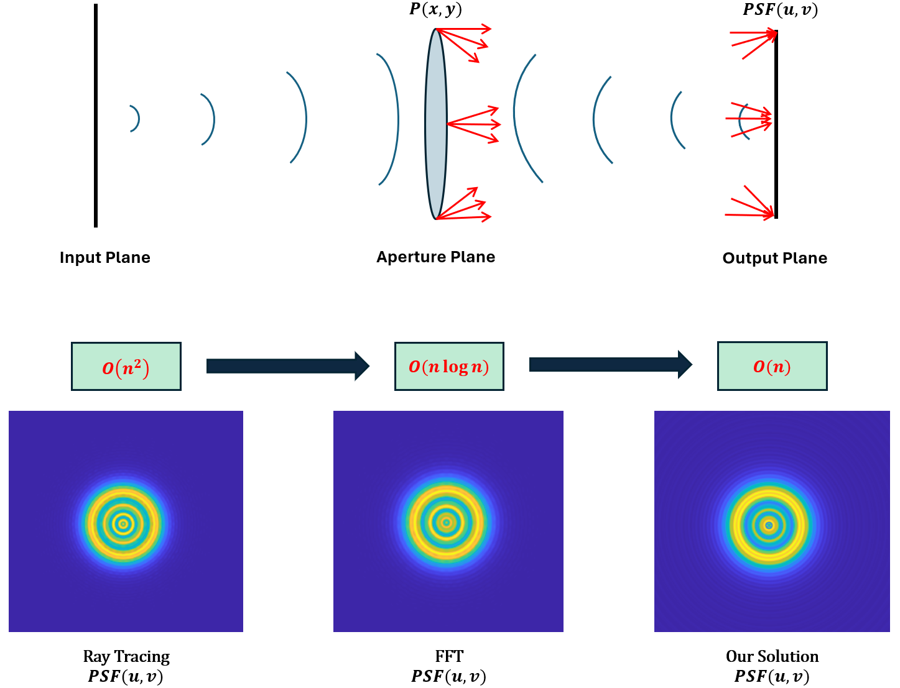

Image Processing · Optics · Computer Vision
View ResearchI am an Electrical Engineering student at Purdue University with interests in computational imaging/photography and optical imaging systems.
Point Spread Function (PSF) compuation is a critical step in image signal processing and machine vision tasks. In this paper, we present a closed form approximation for an aberrated defocused PSF to reduce time complexity and acceleate image computation speed.
If the PDF does not display, click here to open it.
Email: nicholasganino22@gmail.com
GitHub: github.com/nganino